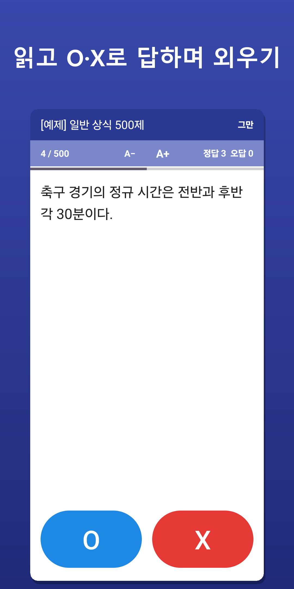
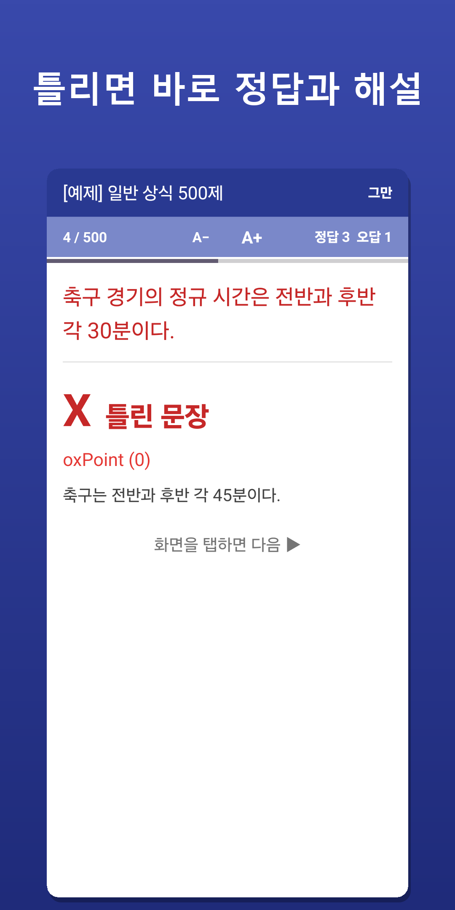
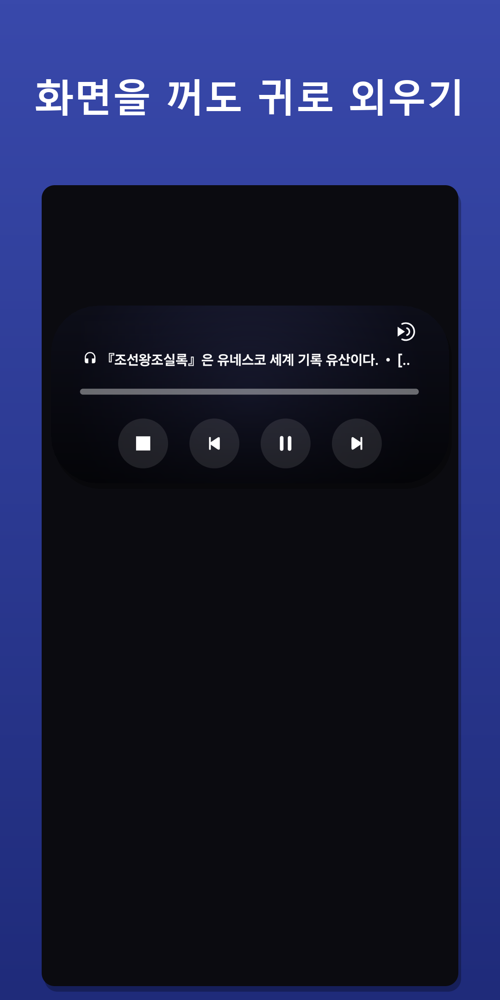
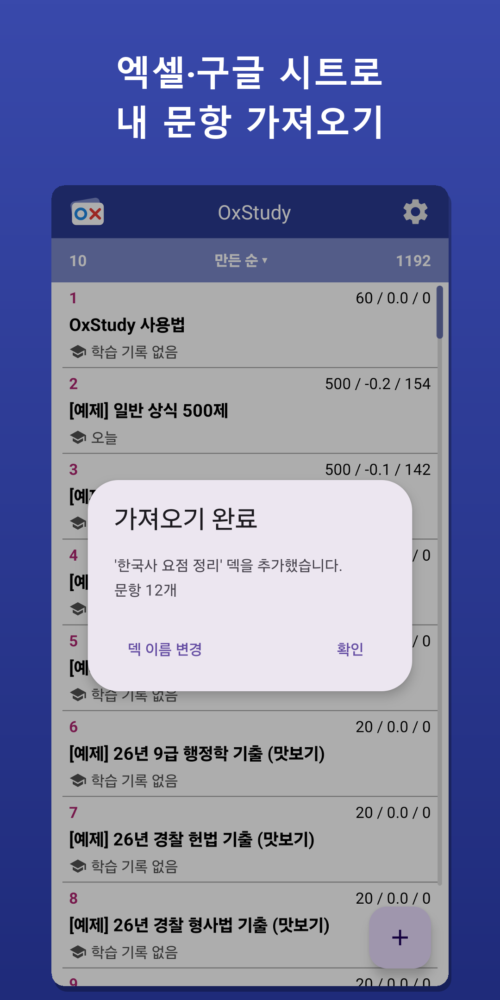

의대 강의 내용, 변호사시험·공무원·자격증 시험 지문, 단어 뜻, 상식처럼 "맞다/틀리다"로 확인할 수 있는 내용이라면 무엇이든 OxStudy의 덱(문항 묶음)으로 만들 수 있습니다.
이런 공부에
- 의대 기초의학 암기: 생리학·병리학·약리학
- 변호사시험 선택형 지문 OX 정리 (민법·형법·헌법 등)
- 공무원·경찰 기출 지문 OX 정리, 자격증 시험 대비
- 오답노트처럼 틀린 문항만 반복
- 귀화 시험(종합평가)·귀화 면접 준비, 외국인의 한국어 공부(EPS-TOPIK·TOPIK)
- 단어장·용어 암기, 출퇴근길 듣기 공부
5가지 모드
테스트 모드
제한 시간(5~40초) 안에 O·X를 누릅니다. 틀리면 정답과 해설을 보여 주고, 끝나면 틀린 문항만 다시 풀 수 있습니다.
리스트 모드
고른 문항을 정답·해설과 함께 책 읽듯 훑어봅니다. 오른쪽 손잡이를 끌면 원하는 곳으로 바로 갑니다.
카드 모드
손대지 않아도 글 길이에 맞춰 다음 카드로 넘어가는 플래시카드입니다.
오디오 모드
지문·정답·해설을 소리 내어 읽어 줍니다(1~2배속). 화면을 꺼도 계속 읽고, 취침 타이머도 있습니다.
편집 모드
문항 추가, 오타 수정, 글자로 찾기.
약한 문항부터: oxPoint
문항마다 oxPoint가 쌓입니다. 테스트에서 맞히면 +1, 틀리거나 시간을 넘기면 −1입니다. "−2 이하"처럼 덜 외운 문항만, 또는 아직 안 푼 문항만 골라서 볼 수 있습니다.
엑셀·구글 시트로 내 덱 만들기
A열에 지문, B열에 정답(O/X), C열에 해설을 채운 엑셀(.xlsx) 파일이나 구글 시트를 바로 가져옵니다. 칸이 맞춰진 빈 양식도 앱에서 내보낼 수 있습니다.
| A: 지문 | B: 정답 | C: 해설 |
|---|---|---|
| 물은 1기압에서 100 °C에 끓는다. | O | 해수면 높이(1기압) 기준입니다. |
| 태양은 행성이다. | X | 태양은 항성(별)입니다. |
처음부터 들어 있는 예제 덱
- 의대 기초의학: 생리학 100제, 병리학 100제, 약리학 100제 (모든 문항 해설)
- 일반 상식 300제, 과학 상식 300제
- 귀화 시험·면접 대비 100제
- EPS-TOPIK(고용허가제 한국어능력시험) 대비 100제
- 2026년 국가공무원 9급 기출 맛보기(한국사, 행정법), 경찰공무원(순경) 기출 맛보기(형사법, 경찰학)
예제 덱은 연습용이라 내용의 정확성을 보장하지 않습니다.
그 밖에
- 덱을 .oxstudy 파일로 주고받기, 모든 덱을 학습 기록과 함께 백업
- 글자 크기 90~400%
- 화면 언어: 한국어·English·日本語·Tiếng Việt·Español·繁體中文
- 휴대폰·태블릿 지원
- 무료(광고 있음). 문항을 푸는 중이나 카드·오디오 재생 중에는 광고가 나오지 않습니다. 덱과 학습 기록은 휴대폰 안에만 저장됩니다.